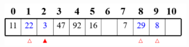

2020-08-07
23
哈希表--知识点整理
散列表
一、哈希表概念
哈希表 （Hash table，也叫散列表），是根据关键码值（Key-value）而直接访问在内存存储位置的数据结构。也就是说，它通过把键值通过一个函数的计算，映射到表中一个位置来访问记录，这加快了查找速度。这个映射函数称做哈希函数，存放记录的数组称做哈希表。
1.散列表目的与特征
数组的最大特点就是：寻址容易，插入和删除困难； 而链表的特点正好相反，寻址困难，而插入和删除操作容易。 哈希表就是这样一个集查找、插入和删除操作于一身的数据结构。
哈希表和哈希函数的标准定义：若关键字为key，则其值value存放在f(key)的存储位置上。由此，不需比较便可直接取得所查记录。称这个对应关系f为哈希函数，按这个思想建立的表为哈希表。
2.散列表的原理
哈希表的特点是由键值对组合key-value（键和值）组成的，key-关键字 value-真实的数据，f（key）存储值value所在的地址，。 每一个key都有一个对应value，value可以重复，key不可重复。
HashMap的数据结构为数组+链表，以key，value的形式存值，通过调用put与get方法来存值与取值。它内部维护了一个Entry数组，得到key的hashCode值将其移位按位与运算,然后再通过跟数组的长度-1作逻辑与运算得到一个index值来确定数据存储在Entry数组当中的位置，通过链表来解决hash冲突问题。当发生碰撞了，对象将会储存在链表的下一个节点中。
哈希算法是通过put(key,value)（添加）和get(key)的方法（返回索引）来实现存储和获取对象。当需要put值的时候，先调用hash算法，将key解析成固定长度的数字索引（hashCode的值），此索引值就是value值存储的位置；当需要获取value 时，将key用同样的算法解析hashCode成同样的数字索引，然后获取对应的value。
3.哈希表的应用
- 查找、模拟映射关系；
- 防止重复
- 数据缓存
二、哈希表的实现方法
哈希表的实现就是映射函数构造，看某个元素具体属于哪一个类别。如何构造我们要考虑两个问题：
- n个数据原仅占用n个地址，虽然散列查找是以空间换时间，但仍希望散列的地址空间尽量小。
- 无论用什么方法存储，目的都是尽量均匀地存放元素，以避免冲突。
哈希表的映射函数构造方法也有很多，常见的有：直接定址法、 除留余数法、 乘余取整法、 数字分析法、 平方取中法、 折叠法、 随机数法等。
1.直接定位法
Hash(key) = a·key + b (a、b为常数)
优点：以关键码key的某个线性函数值为哈希地址，不会产生冲突.
缺点：要占用连续地址空间，空间效率低。
例：关键码集合为{100，300，500，700，800，900}， 选取哈希函数为Hash(key)=key/100， 则存储结构（哈希表）如下：

2.除留余数法
Hash(key) = key mod p (p是一个整数)
特点：以关键码除以p的余数作为哈希地址。
3.乘余取整法
Hash(key) = [B*( A*key mod 1 ) ]下取整 (A、B均为常数，且0
4.数字分析法
特点：某关键字的某几位组合成哈希地址。所选的位应当是：各种符号在该位上出现的频率大致相同。
例：有一组（例如80个）关键码，其样式如下：

5.平方取中法
特点：对关键码平方后，按哈希表大小，取中间的若干位作为哈希地址。
理由：因为中间几位与数据的每一位都相关。
例：2589的平方值为6702921，可以取中间的029为地址。6.折叠法
特点：将关键码自左到右分成位数相等的几部分（最后一部分位数可以短些），然后将这几部分叠加求和，并按哈希表表长，取后几位作为哈希地址。
适用于：每一位上各符号出现概率大致相同的情况。
法1:移位法 ── 将各部分的最后一位对齐相加。
法2:间界叠加法──从一端向另一端沿分割界来回折叠后，最后一位对齐相加。
例：元素42751896, 用法1： 427＋518＋96=1041 用法2： 427 518 96—> 724+518+69 =1311三、哈希表定址与解决冲突：
1.开放定址法
如果两个数据元素的哈希值相同，则在哈希表中为后插入的数据元素另外选择一个表项。当程序查找哈希表时，如果没有在第一个对应的哈希表项中找到符合查找要求的数据元素，程序就会继续往后查找，直到找到一个符合查找要求的数据元素，或者遇到一个空的表项。线性探测带来的最大问题就是冲突的堆积，你把别人预定的坑占了，别人也就要像你一样去找坑。改进的办法有二次方探测法和随机数探测法。开放地址法包括线性探测、二次探测以及双重散列等方法。
设计思路：有冲突时就去寻找下一个空的哈希地址，只要哈希表足够大，空的哈希地址总能找到，并将数据元素存入。
具体实现：
1）线性探测法Hi=(Hash(key)+di) mod m ( 1≤i < m ) 其中： Hash(key)为哈希函数 m为哈希表长度 di 为增量序列 1，2，…m-1，且di=i
例：关键码集为 {47，7，29，11，16，92，22，8，3}，
设：哈希表表长为m=11； 哈希函数为Hash(key)=key mod 11； 拟用线性探测法处理冲突。建哈希表如下：

解释：
- 47、7（以及11、16、92）均是由哈希函数得到的没有冲突的哈希地址；
- Hash(29)=7，哈希地址有冲突，需寻找下一个空的哈希地址：由H1=(Hash(29)+1) mod 11=8，哈希地址8为空，因此将29存入。
- 另外，22、8、3同样在哈希地址上有冲突，也是由H1找到空的哈希地址的。其中3 还连续移动了两次（二次聚集）
int FindHash(SeqList* pL, KeyType K)
{
int c=0; int p=Hash(K); /*求得哈希地址*/
while(pL->data[p].key!=NULL_KEY && K!=pL->data[p].key && ++cdata[p].key) {
printf("\n成功找到 %d", K);
return p; /*查找成功,p返回待查数据元素下标*/
}
else if(pL->data[p].key==NULL_KEY) {
printf("\n无法找到 %d , 在位置 %d 插入。", K,p);
pL->data[p].key = K; pL->n++;
return p;
} else {
printf("\n无法找到 %d , 表已满。", K);
return -1;
}
}
仍举上例，改用二次探测法处理冲突，建表如下：
Hi=(Hash(key)±di) mod m 其中：Hash(key)为哈希函数 m为哈希表长度，m要求是某个4k+3的质数； di为增量序列 12，-12，22-22，…，q2
注：只有3这个关键码的冲突处理与上例不同， Hash(3)=3，哈希地址上冲突，由 H1=(Hash(3)+12) mod 11=4，仍然冲突； H2=(Hash(3)-12) mod 11=2，找到空的哈希地址，存入。
2.链地址法
基本思想：基本思想：将具有相同哈希地址的记录链成一个单链表，m个哈希地址就设m个单链表，然后用一个数组将m个单链表的表头指针存储起来，形成一个动态的结构。
注：有冲突的元素可以插在表尾,也可以插在表头
例：设{ 47, 7, 29, 11, 16, 92, 22, 8, 3, 50, 37, 89 }的哈希函数为： Hash(key)=key mod 11， 用拉链法处理冲突，则建表如下图所示。

3.双哈希表函数法
Hi=RHi(key) i=1, 2, …，k
>RHi均是不同的哈希函数，当产生冲突时就计算另一个哈希函数，直到冲突不再发生。
优点：不易产生聚集；
缺点：增加了计算时间。
四、哈希表的查找和分析
1.哈希查找过程
哈希表的主要目的是用于快速查找，且插入和删除操作都要用到查找。由于散列表的特殊组织形式，其查找有特殊的方法。 设散列为HT[0…m-1]，散列函数为H(key)，解决冲突的方法为R(x, i) ，则在散列表上查找定值为K的记录的过程如图所示。

2.查找效率分析
明确 散列函数没有“万能”通式，要根据元素集合的特性而分别构造。
由于冲突的产生，使得哈希表的查找过程仍然要进行比较，仍然要以平均查找长度ASL来衡量。 一般地，ASL依赖于哈希表的装填因子α，它标志着哈希表的装满程度。

Comments

回复

回复

回复

回复